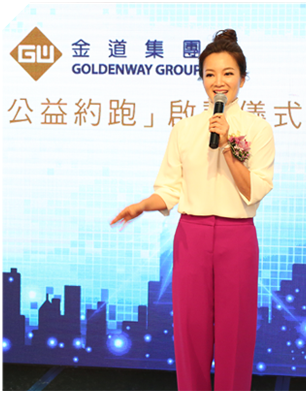

让我们一起将光明带去西藏
权威的眼科医生；专业的医疗团队；优良的义工支援； 这里将开展一次大型白内障手术治疗！
「光明行」是由金道官方举办的一项大型慈善医疗活动，也是2016年金道集团“公益行” 的子活动（该活动包括“约跑巴菲特”及“慈善橙色跑”活动）。
光明，代表着希望和阳光，在「光明行」活动中，金道将和明星阿雅、深圳眼库基金法人姚晓明博士及其医疗团队分批次前往藏区，给白内障患者进行手术。首次光明行将在8月底举行，医疗团队将前往西藏拉萨进行光明行活动，为当地的患者提供手术，尽我们的绵薄之力带去光明的礼物，为西藏增添更多希望！
我们有社会名人的关注！+
我们有专业的医疗团队！+
我们有优良的义工支援！
让每一个善念抵达正觉，给西藏100名白内障患者重获光明的机会
-
阿雅呼吁 引起关注
台湾艺人阿雅在微博上发现西藏白内障患者病情严重并向社会发起呼吁，希望引起社会各界关注。
-
公益约跑启动仪式
金道关注该事件并迅速邀请艺人阿雅、深圳政协委员眼库基金主席姚晓明博士召开“金道公益约跑”启动仪式。积极投身于公益事业。
-
美国巴菲特股东大会
「悦动生命，点亮光明」由百名国内企业家组成的公益约跑(美国站)于美国内布拉斯加州最大的城市奥马哈圆满举行。
-
长城之巅 约跑光明
金道、小米橙色跑在北京举行。阿雅、潘石屹、雷军、黎万强等引领数百人的跑团在长城完成了10KM越野跑挑战。
-
西藏光明行
金道将和医疗团队一同前往西藏拉萨进行白内障医疗救助活动并向贫困家庭提供资助，为西藏带去光明。
金道将与深圳狮子会及姚晓明博士共同携手，给西藏白内障患者现场治疗
金道携手雷军，阿雅、潘石屹、黎万强等引领数百人的跑团，
在长城完成了10KM越野跑挑战，以长城之巅的风景为当日活动画下圆满句点
金道携手百名企业家参与"投资你的五千米"长跑活动，呼吁大家关注西藏白内障患者。

发布会邀请台湾知名影视艺人阿雅小姐和深圳市政协委员及深圳市慈善会晓明眼库基金主席姚晓明博士进行活动启动仪式，
呼吁大家约跑筹集善款，帮助中国西藏的白内障患者重获光明。
- 